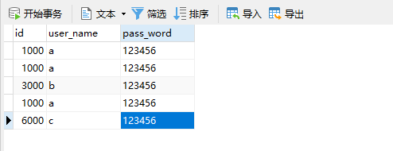

echo编辑整理，欢迎转载，转载请声明文章来源。欢迎添加echo微信(微信号：t2421499075)交流学习。 百战不败，依不自称常胜，百败不颓，依能奋力前行。——这才是真正的堪称强大！！！
如果前面的准备工作都做好了，并且有配置Mycat实现读写分离，就能很快的上手Mycat实现数据库分库分表。Mycat实现读写分离请参考：https://blog.csdn.net/xlecho/article/details/102897050
由于我们的Mycat实现读写分离配置好了登录用户名和密码，所以配置Mycat实现数据库分库分表的工作就不在需要去配置server.mxl了，但是我们使用分表规则的时候，要涉及两个新的配置文件
实现数据库分库分表它和读写分离最大的不同就是dataHost该标签的配置，读写分离，只需要一个dataHost即可。但是dataHost如果只配置一个，就没有办法实现多库读写。我们要实现分表，当然要考虑每一个库对应的表都需要能够读写。所以我们在配置table的时候，对应的每一个库，就需要对应到每一个可以写的库。同时和读写分离不同的是，我们既然要分库分表就需要分表的规则，这里新增了分表规则auto-sharding-long
<?xml version="1.0"?>
<!DOCTYPE mycat:schema SYSTEM "schema.dtd">
<mycat:schema xmlns:mycat="http://io.mycat/">
<schema name="userDB" checkSQLschema="true" sqlMaxLimit="100">
<table name="user" dataNode="dn1,dn2,dn3" primaryKey="id" rule="auto-sharding-long"/>
</schema>
<dataNode name="dn1" dataHost="testNode1" database="test"/>
<dataNode name="dn2" dataHost="testNode2" database="test"/>
<dataNode name="dn3" dataHost="testNode3" database="test"/>
<dataHost name="testNode1" maxCon="1000" minCon="10" balance="1" writeType="0" dbType="mysql" dbDriver="native" switchType="-1" slaveThreshold="100">
<heartbeat>select user()</heartbeat>
<writeHost host="hostM1" url="192.168.222.132:3306" user="root" password="123456" />
</dataHost>
<dataHost name="testNode2" maxCon="1000" minCon="10" balance="1" writeType="0" dbType="mysql" dbDriver="native" switchType="-1" slaveThreshold="100">
<heartbeat>select user()</heartbeat>
<writeHost host="hostM2" url="192.168.222.133:3306" user="root" password="123456" />
</dataHost>
<dataHost name="testNode3" maxCon="1000" minCon="10" balance="1" writeType="0" dbType="mysql" dbDriver="native" switchType="-1" slaveThreshold="100">
<heartbeat>select user()</heartbeat>
<writeHost host="hostM3" url="192.168.222.134:3306" user="root" password="123456" />
</dataHost>
</mycat:schema>
我们在schema中配置了auto-sharding-long的规则就需要在rule.xml中配置对应的规则。（Mycat原始的rule配置文件中就已经有了我们需要配置的规则，所以我们这里不需要改动，但是auto-sharding-long对应的autopartition-long.txt文档，由于演示需要，我们更改一下）
<?xml version="1.0" encoding="UTF-8"?>
<!-- - - Licensed under the Apache License, Version 2.0 (the "License");
- you may not use this file except in compliance with the License. - You
may obtain a copy of the License at - - http://www.apache.org/licenses/LICENSE-2.0
- - Unless required by applicable law or agreed to in writing, software -
distributed under the License is distributed on an "AS IS" BASIS, - WITHOUT
WARRANTIES OR CONDITIONS OF ANY KIND, either express or implied. - See the
License for the specific language governing permissions and - limitations
under the License. -->
<!DOCTYPE mycat:rule SYSTEM "rule.dtd">
<mycat:rule xmlns:mycat="http://io.mycat/">
<tableRule name="rule1">
<rule>
<columns>id</columns>
<algorithm>func1</algorithm>
</rule>
</tableRule>
<tableRule name="rule2">
<rule>
<columns>user_id</columns>
<algorithm>func1</algorithm>
</rule>
</tableRule>
<tableRule name="sharding-by-intfile">
<rule>
<columns>sharding_id</columns>
<algorithm>hash-int</algorithm>
</rule>
</tableRule>
<tableRule name="auto-sharding-long">
<rule>
<columns>id</columns>
<algorithm>rang-long</algorithm>
</rule>
</tableRule>
<tableRule name="mod-long">
<rule>
<columns>id</columns>
<algorithm>mod-long</algorithm>
</rule>
</tableRule>
<tableRule name="sharding-by-murmur">
<rule>
<columns>id</columns>
<algorithm>murmur</algorithm>
</rule>
</tableRule>
<tableRule name="crc32slot">
<rule>
<columns>id</columns>
<algorithm>crc32slot</algorithm>
</rule>
</tableRule>
<tableRule name="sharding-by-month">
<rule>
<columns>create_time</columns>
<algorithm>partbymonth</algorithm>
</rule>
</tableRule>
<tableRule name="latest-month-calldate">
<rule>
<columns>calldate</columns>
<algorithm>latestMonth</algorithm>
</rule>
</tableRule>
<tableRule name="auto-sharding-rang-mod">
<rule>
<columns>id</columns>
<algorithm>rang-mod</algorithm>
</rule>
</tableRule>
<tableRule name="jch">
<rule>
<columns>id</columns>
<algorithm>jump-consistent-hash</algorithm>
</rule>
</tableRule>
<function name="murmur" class="io.mycat.route.function.PartitionByMurmurHash">
<property name="seed">0</property><!-- 默认是0 -->
<property name="count">2</property><!-- 要分片的数据库节点数量，必须指定，否则没法分片 -->
<property name="virtualBucketTimes">160</property><!-- 一个实际的数据库节点被映射为这么多虚拟节点，默认是160倍，也就是虚拟节点数是物理节点数的160倍 -->
<!-- <property name="weightMapFile">weightMapFile</property> 节点的权重，没有指定权重的节点默认是1。以properties文件的格式填写，以从0开始到count-1的整数值也就是节点索
引为key，以节点权重值为值。所有权重值必须是正整数，否则以1代替 -->
<!-- <property name="bucketMapPath">/etc/mycat/bucketMapPath</property>
用于测试时观察各物理节点与虚拟节点的分布情况，如果指定了这个属性，会把虚拟节点的murmur hash值与物理节点的映射按行输出到这个文件，没有默认值，如果不指定，就不>会输出任何东西 -->
</function>
<function name="crc32slot" class="io.mycat.route.function.PartitionByCRC32PreSlot">
<property name="count">2</property><!-- 要分片的数据库节点数量，必须指定，否则没法分片 -->
</function>
<function name="hash-int"
class="io.mycat.route.function.PartitionByFileMap">
<property name="mapFile">partition-hash-int.txt</property>
</function>
<function name="rang-long"
class="io.mycat.route.function.AutoPartitionByLong">
<property name="mapFile">autopartition-long.txt</property>
</function>
<function name="mod-long" class="io.mycat.route.function.PartitionByMod">
<!-- how many data nodes -->
<property name="count">3</property>
</function>
<function name="func1" class="io.mycat.route.function.PartitionByLong">
<property name="partitionCount">8</property>
<property name="partitionLength">128</property>
</function>
<function name="latestMonth" class="io.mycat.route.function.LatestMonthPartion">
<property name="splitOneDay">24</property>
</function>
<function name="partbymonth"
class="io.mycat.route.function.PartitionByMonth">
<property name="dateFormat">yyyy-MM-dd</property>
<property name="sBeginDate">2015-01-01</property>
</function>
<function name="rang-mod" class="io.mycat.route.function.PartitionByRangeMod">
<property name="mapFile">partition-range-mod.txt</property>
</function>
<function name="jump-consistent-hash" class="io.mycat.route.function.PartitionByJumpConsistentHash">
<property name="totalBuckets">3</property>
</function>
</mycat:rule>该配置文件的原本配置是M为单位，这样的数据太大，测试的时候，计算麻烦，我们更改配置如下：
0-2000=0 # 代表id的大小在0-2000中间就是用dn1服务器
2000-4000=1 # 代表id的大小在2000-4000中间就是用dn2服务器
4000-8000=2 # 代表id的大小在4000-8000中间就是用dn3服务器我们有三个节点，相当于一个有一个服务器集合，每台服务器都是根据下标来对应的，都是从0开始计数，0就代表我们的dn1
插入三条数据，根据我们配置的规则进行插入
INSERT INTO `user`(`id`, `user_name`, `pass_word`) VALUES (1000, 'a', '123456');
INSERT INTO `user`(`id`, `user_name`, `pass_word`) VALUES (3000, 'b', '123456');
INSERT INTO `user`(`id`, `user_name`, `pass_word`) VALUES (6000, 'c', '123456');插入完成之后，我们连接Mycat查看数据，如下图：

这里我们有3条1000的数据原因是因为我们id等于1000，所以插入到dn1服务里面，但是dn1是我们对应的MySQL主从复制的主服务器132，所以，插入该服务器之后，另外两台从服务器133/134都会直接将数据复制过去。
服务器dn1，应该id=1000的三台服务器都有，id=3000在我们的133从服务器上，id=6000在我们134服务器上
做一个有底线的博客主